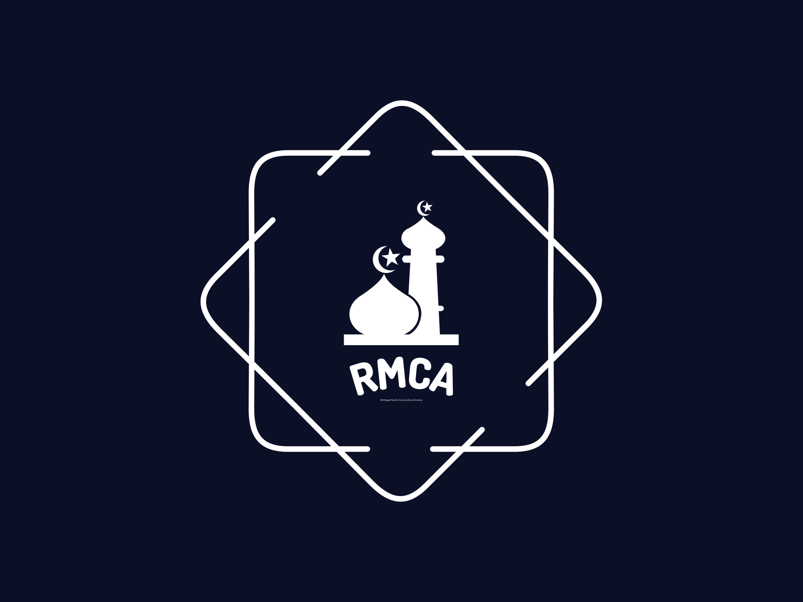

These are Adhan times. Iqamah times are maintained separately and appear on the home page.
Daily schedule
Looking for today’s Iqamah times?
View the current daily prayer schedule on the Masjid Arkan home page.

Masjid ArkanPhoenix, ArizonaThese are Adhan times. Iqamah times are maintained separately and appear on the home page.
Daily schedule
View the current daily prayer schedule on the Masjid Arkan home page.